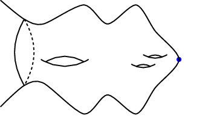

- Bubble Tree Convergence and Local Diffeomorphism Finiteness for Gradient Ricci Shrinkers, (joint with R. Buzano). Mathematische Zeitschrift Volume 304, Article number: 7 (2023). [Arχiv, Journal]
- Gaussian Upper Bounds for the Heat Kernel on Evolving Manifolds, (joint with R. Buzano). J. London Math. Soc. https://doi.org/10.1112/jlms.12793 [Arχiv, Journal]

About Me
Hello and welcome to my website! I'm currently a postdoctoral researcher at KTH Royal Institute of Technology as part of the Differential Geometry & General Relativity group. I received my PhD from Queen Mary University of London under the supervision of Reto Buzano. I obtained my master's degree (MASt) from the the University of Warwick and my BSc (Mathematics and Computer Science) from King's College London. My research interests include geometric flows, boundary value problems, and special geometric objects like Einstein manifolds and minimal surfaces.
Contact Info and Research Links
Email: yudowitz@kth.se
Address: KTH Royal Institute of Technology, Lindstedtsvägen 25, 11428 Stockholm, Sweden
CV,
Arχiv Profile,
ResearchGate Profile
Research
Overview of My Research
My research largely focuses on Ricci flow, ∂t g(t) = -2Ric(g(t)), a geometric heat flow originally introduced to uniformize manifolds and then classify them using a surgery procedure. Due to the non-linearity of the equation, one expects to encounter finite time singularities. That is, when the curvature tensor becomes unbounded in some region as t → T. This is a common sort of behavior in non-linear PDEs and some standard problems are to understand the singularity formation by taking blow-up limits ("zooming in" on the singular region) and then classify the possible limits, as well as figuring out how to continue the flow past the singular time.
Gaussian Bounds of Heat Kernels for Evolving Manifolds

If a singularity forms at a "Type I rate", then it has been shown [Naber (2010), Enders-Müller-Topping (2011), Mantegazza-Müller (2015)] that blow-ups in this case yield non-flat gradient shrinking Ricci solitons (manifolds which shrink monotonically under Ricci flow). The proofs of these results vitally depend on good control of the exponential weight in Perelman's W entropy, a monotone quantity which is constant on gradient shrinkers. Since this exponential weight satisfies an adjoint heat equation, control of it comes in the form of "Gaussian bounds" for the heat kernel. Such bounds have been derived under a variety of conditions, using different methods in each case. In [2], I have tried to find a more unified approach to proving such Gaussian bounds, which resulted in estimates depending on the evolution of the distance function under Ricci flow, rather than directly on the curvature of the evolving manifold. I also showed these results hold for manifolds evolving under a wider class of flows, ∂t g(t) = -2Sc(g(t)), provided the symmetric 2-tensor Sc satisfies an inequality involving an adjoint heat equation, Bianchi type identity, and comparison to the Ricci tensor.
Bubble Tree Convergence of Shrinking Ricci Solitons

Currently, a full classification of shrinking solitons is unknown. In low dimensions (n=2,3) we know that they are either (quotients of) spheres or cylinders, or Euclidean space [Hamilton (1995), Perelman (2002, 2003), Ni-Wallach (2008), Cao-Chen-Zhou (2008), Naber (2010)]. More recently, smooth 4-dimensional Kähler shrinkers have been classified [Bamler-Cifarelli-Conlon-Deruelle (2022)]. However, recent compactness theorems indicate blow-ups in dimensions n ≥ 4 can yield shrinkers that are singular themselves [Haslhofer-Müller (2011, 2015), Bamler (2020)] which poses another issue to classification. I've investigated this singularity formation, provided the singular set consists of isolated cone points ([1]). This involved applying bubble tree analysis to the space of shrinkers with locally bounded energy by performing successive blow-ups around each singular point. This allowed for the proof of an energy identity which, through the Chern-Gauss-Bonnet theorem, shows that any topology lost due to the singularity formation can be recovered by blowing up around the singular points. The bubble tree analysis also yielded a local diffeomorphism finiteness theorem, which acts as a qualitative classification theorem.
Publications
Talks, Teaching, and Other Activities
Invited/Contributed Talks
- Ghent Methusalem Junior Seminar: ``Bubble Tree Convergence of Shrinking Ricci Solitons" (May 10, 2023).
- KTH Differential Geometry and General Relativity Seminar: ``Bubble Tree Convergence of Gradient Ricci Shrinking Solitons" (Jan. 19, 2023).
- Brunel University Math and Statistics Colloquium: "Ricci Flow, the Poincaré Conjecture, and Bubbles" (Nov. 16, 2022).
- KIT Geometric Analysis Seminar: “Bubble Tree Convergence of Gradient Ricci Shrinking Solitons” (Oct. 5, 2022).
- 9th Heidelberg Laureate Forum: “Bubble Tree Convergence of Gradient Ricci Shrinking Solitons” (Sept. 19, 2022).
- KCL/UCL Junior Geometry Seminar: “Bubble Tree Convergence of Gradient Ricci Shrinking Solitons” (Jan. 27, 2022).
- Queen Mary Internal Postgraduate Seminar (QuIPS): “Ricci Flow and the Poincaré Conjecture” (Nov. 2, 2021).
Teaching
Teaching Associate, Queen Mary University of London:- Probability and Statistics I, Fall Semester (2022/2023)
- Calculus II, Spring Semester (2021/2022)
- Actuarial Mathematics I, Fall Semester (2021/2022, 2022/2023)
- Vectors and Matrices, Spring Semester (2019/2020)